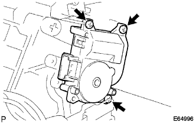

|
新品のOリング2個およびクーラエクスパンシヨンバルブの接合部にコンプレッサオイル(ND-OIL8)を充分に塗布する。
Oリング2個をクーラエバポレータNo.1に取り付ける。
クーラエバポレータNo.1をクーリングユニツトケースに取り付ける。
 |
スクリュー8本で、クーリングユニツトケースを取り付ける。
エアコンディショナ ブロワASSY 組み付け |
| 1. クーラ エバポレータ NO.1取り付け（寒冷地なし） |
|
新品のOリング2個およびクーラエクスパンシヨンバルブの接合部にコンプレッサオイル(ND-OIL8)を充分に塗布する。
Oリング2個をクーラエバポレータNo.1に取り付ける。
クーラエバポレータNo.1をクーリングユニツトケースに取り付ける。
|
スクリュー8本で、クーリングユニツトケースを取り付ける。
| 2. クーラ エバポレータ NO.1取り付け（寒冷地仕様車） |
|
新品のOリング2個およびクーラエクスパンシヨンバルブの接合部にコンプレッサオイル(ND-OIL8)を充分に塗布する。
Oリング２個をクーラエバポレータNo.1に取り付ける。
クーラエバポレータNo.1をクーリングユニツトケースに取り付ける。
 |
スクリュー３本で、エバポレータカバーを取り付ける。
スクリューおよびツメのかん合２箇所で、エアダクトASSYを取り付ける。
| 3. クーラエキスパンション バルブ取り付け |
二面幅４ｍｍヘキサゴンレンチを使用して、ボルト２本でクーラエキスパンションバルブを取り付ける。
| 4. クーラ サーミスタ NO.1取り付け |
ツメをかん合させてクーラサーミスタNo.1をブロワケースに取り付ける。
| 5. ブロワ モータ(ウィズ ファン)取り付け |
 |
スクリュー3本で、ブロワモータ(ウィズファン)を取り付ける。
 |
コネクタを接続詞、クーラワイヤリングNo.1を取り付ける。
| 6. ブロワモータ カバー取り付け（寒冷地仕様車） |
 |
スクリュー４本でホールディグスプリングと同時にブロワモータカバーを取り付ける。
ロッドをブロワモータカバーに接続する
| 7. ブロワ レジスタ取り付け（Ａ／Ｃマニュアル） |
 |
スクリュー2本でブロワレジスタASSYを取り付ける。
コネクタを接続する。
| 8. ブロワ レジスタ トランジスタASSY取り付け（Ａ／Ｃオート） |
 |
スクリュー2本でブロワレジスタトランジスタASSYを取り付ける。
コネクタを接続する。
| 9. クリーンエアフィルタ取り付け |
 |
クリーンエアフイルタをエアフイルタケースに取り付ける。
| 10. エアフィルタ ケース取り付け |
 |
ツメをかん合させてエアフイルタケースを取り付ける。
| 11. ダンパ サーボSUB-ASSY NO.1取り付け（寒冷地仕様車寒冷地仕様車以外A/Cオート） |
 |
図のように、ダンパサーボリンクピンがブロワASSYの各リンク溝に合うように組み付ける。
|  |
スクリュー3本でダンパサーボを取り付ける。
コネクタを接続する。